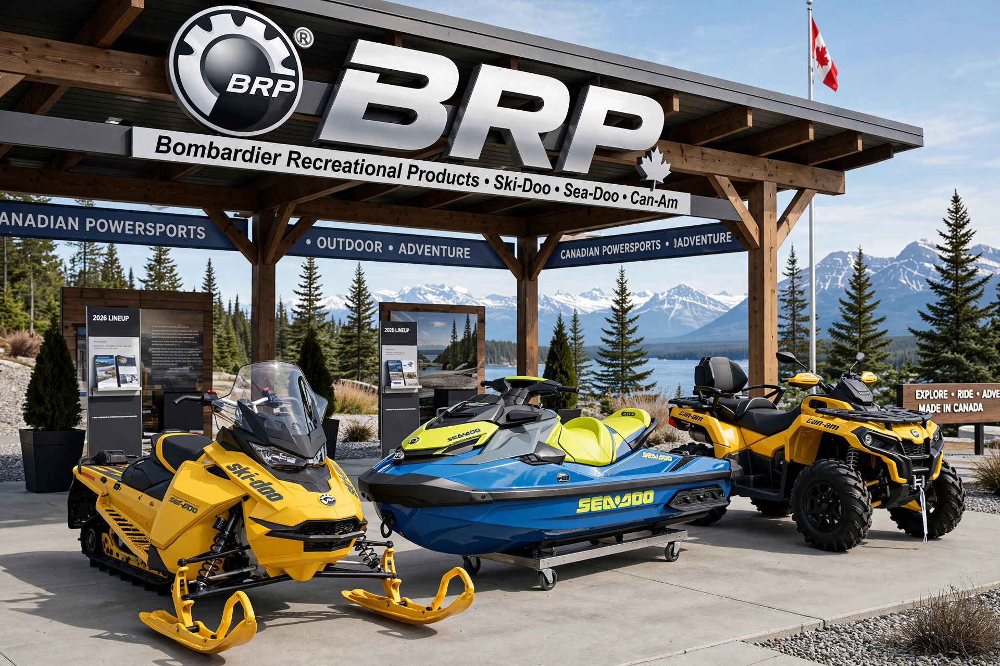

BRP Inc. (Bombardier Recreational Products) is a Canadian manufacturer of powersports vehicles — Ski-Doo and Lynx snowmobiles, Sea-Doo personal watercraft, Can-Am ATVs, side-by-sides and three-wheelers, and Rotax engines — headquartered in Valcourt, Quebec.

| BRP Inc. | |
|---|---|
| Founded | 2003 (origins 1942, Bombardier) |
| Headquarters | Valcourt, Quebec, Canada |
| Brands | Ski-Doo, Sea-Doo, Can-Am, Rotax, Lynx |
| Stock | TSX: DOO |
BRP descends from Joseph-Armand Bombardier's company, which commercialised the snowmobile in 1959. In 2003 Bombardier sold its recreational products division to a consortium including Bain Capital and the Bombardier-Beaudoin family; it became BRP and went public on the Toronto Stock Exchange in 2013. BRP also makes Evinrude-related marine products (discontinued 2020) and Manitou boats, and supplies Rotax engines for aircraft, karts, and motorcycles.
Recreated from memory.